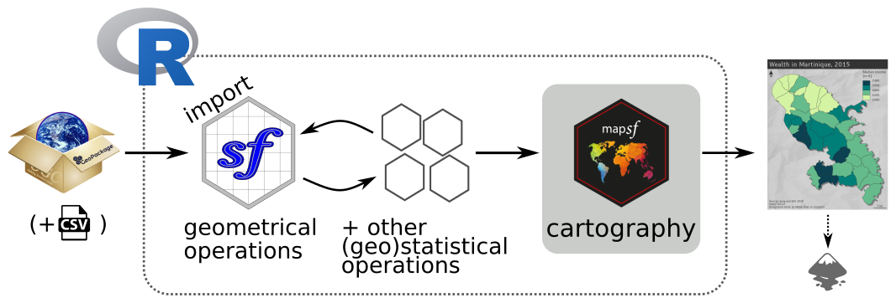
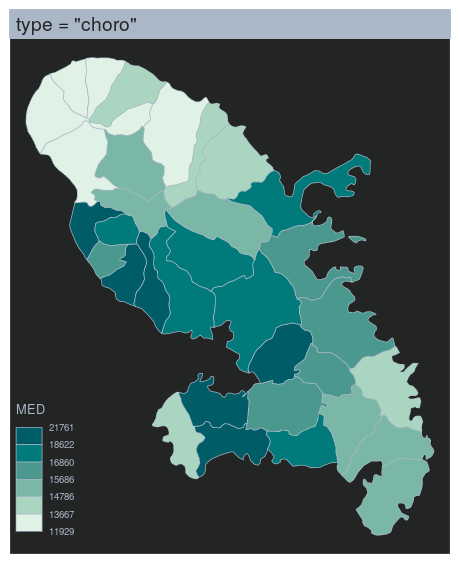
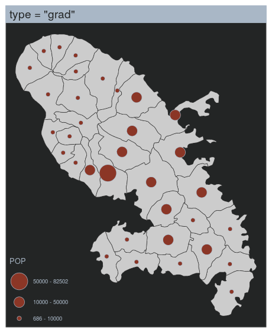
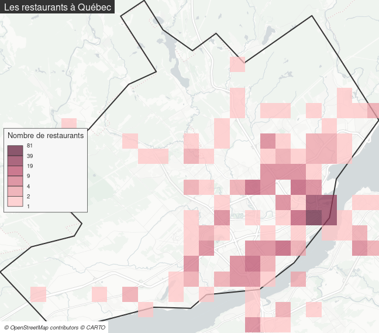
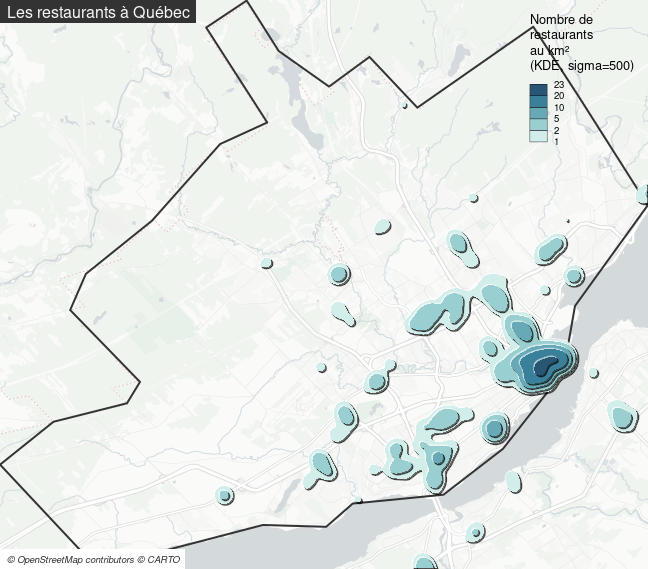

library(sf)
mtq <- st_read(dsn = "data/mtq.gpkg",layer = "mtq")Articulation de différents langages (R, JavaScript et Python) pour la géovisualisation avec Quarto
Atelier Sageo, Québec, Juin 2023
R
L’écosystème spatial de R
Le logiciel R (R Core Team, 2023) permet depuis longtemps de traiter et représenter les données spatiales.
Le principal package permettant de traiter les données vectorielles avec R est le package sf (Pebesma, 2018).
Les packages stars (Pebesma et Bivand, 2023) et terra (Hijmans, 2023) quand à eux sont les principaux packages dédiés au traitement des données raster.
Les développements actuels s’appuient sur ce socle et forment un écosystème robuste qui offre aux utilisateurs la plupart des fonctionnalités autrefois réservées aux Systèmes d’Information Géographique.
Le package mapsf (Giraud, 2022) par exemple s’appuie sur le package sf pour créer des cartes thématiques. D’autres packages sont dédiés à la cartographie interactive, aux statistiques spatiales, l’interaction avec des API de cartographie, la création de cartogrammes etc.
Le package sf
Le package sf a été publié fin 2016 par Edzer Pebesma. Ce package permet l’import, l’export, la manipulation et l’affichage de données spatiales vectorielles. Pour cela sf s’appuie sur une série de bibliothèques spatiales : GDAL (GDAL/OGR contributors, 2022) et PROJ (PROJ contributors, 2021) pour les opérations d’import, d’export et de projection, et GEOS (GEOS contributors, 2021) pour les opérations de géotraitement (buffer, intersection…).
Ce package propose des objets simples (suivant le standard simple feature) dont la manipulation est assez aisée. Une attention particulière a été portée à la compatibilité du package avec la syntaxe pipe (|> ou %>%) et les opérateurs du tidyverse (Wickham et al., 2019).

Historique
Le package sf est venu remplacer les packages sp (Pebesma et Bivand, 2005), rgeos (Bivand et Rundel, 2023) et rgdal (Bivand et al., 2023) en combinant leurs fonctionnalités dans un package unique plus ergonomique.

sfLes objets sf sont des data.frame dont l’une des colonnes contient des géométries.
Ce format est très pratique dans la mesure ou les données et les géométries sont intrinsèquement liées dans un même objet.
Vignette décrivant le format simple feature
plot(st_geometry(mtq))
plot(mtq)
mtq_c <- st_centroid(mtq)Warning: st_centroid assumes attributes are constant over geometriesplot(st_geometry(mtq))
plot(st_geometry(mtq_c), cex = 1.2, col = "red", pch = 20, add = TRUE)
mat <- st_distance(x = mtq_c, y = mtq_c)
mat[1:5, 1:5]Units: [m]
[,1] [,2] [,3] [,4] [,5]
[1,] 0.000 35316.29 3019.561 12247.132 17181.321
[2,] 35316.293 0.00 38303.361 25478.399 18597.357
[3,] 3019.561 38303.36 0.000 15099.121 20200.611
[4,] 12247.132 25478.40 15099.121 0.000 7149.189
[5,] 17181.321 18597.36 20200.611 7149.189 0.000mtq_u <- st_union(mtq)
plot(st_geometry(mtq), col = "lightblue")
plot(st_geometry(mtq_u), lwd = 2, border = "red", add = TRUE)
mtq_b <- st_buffer(x = mtq_u, dist = 5000)
plot(st_geometry(mtq_b), col = "grey", lwd = 2, border = "red")
plot(st_geometry(mtq), col = "lightblue", add = TRUE)
plot(st_geometry(mtq_u), lwd = 2, add = TRUE)

mtq_z <- st_intersection(x = mtq, y = p)
plot(st_geometry(mtq))
plot(st_geometry(mtq_z), col = "red", border = "green", add = TRUE)
plot(st_geometry(mtq_z), lwd = 2)

mtq_c |>
st_union() |>
st_voronoi() |>
st_collection_extract("POLYGON") |>
st_intersection(mtq_u) |>
st_sf() |>
st_join(mtq_c, st_intersects) |>
st_cast("MULTIPOLYGON") |>
st_geometry() |>
plot(col = "ivory4")
Le package mapsf

mapsf permet de créer la plupart des types de carte utilisés habituellement en cartographie statistique.
Pour chaque type de carte, plusieurs paramètres permettent de personnaliser la représentation cartographique. Ces paramètres sont les mêmes que ceux que l’on retrouve dans les logiciels de SIG ou de cartographie usuels.
Associées aux fonctions de représentation des données d’autres fonctions sont dédiées à l’habillage cartographique, à la création de cartons ou à l’export des cartes.
mapsf est le successeur de cartography (Giraud et Lambert, 2017), il offre les mêmes fonctionnalités principales tout en étant plus léger et plus ergonomique.









library(mapsf)
# Import the sample dataset
mtq <- mf_get_mtq()
# Plot the base map
mf_map(x = mtq)
# Plot proportional symbols
mf_map(x = mtq, var = "POP", type = "prop")
# Plot a map layout
mf_layout(title = "Population in Martinique",
credits = "T. Giraud; Sources: INSEE & IGN, 2018")
# Export a map with a theme and extra margins
mf_export(x = mtq, filename = "fig/mtq.svg", width = 5,
theme = "green", expandBB = c(0,0,0,.3))
# Plot a shadow
mf_shadow(mtq, col = "grey10", add = TRUE)
# Plot a choropleth map
mf_map(x = mtq, var = "MED", type = "choro",
pal = "Dark Mint",
breaks = "quantile",
nbreaks = 6,
leg_title = "Median Income\n(euros)",
leg_val_rnd = -2,
add = TRUE)
# Start an inset map
mf_inset_on(x = "worldmap", pos = "right")
# Plot mtq position on a worldmap
mf_worldmap(mtq, col = "#0E3F5C")
# Close the inset
mf_inset_off()
# Plot a title
mf_title("Wealth in Martinique, 2015")
# Plot credits
mf_credits("T. Giraud\nSources: INSEE & IGN, 2018")
# Plot a scale bar
mf_scale(size = 5)
# Plot a north arrow
mf_arrow('topleft')
dev.off()
Note
D’autres packages peuvent être utilisés pour réaliser des cartes thématiques.
Le package ggplot2 (Wickham, 2016), en association avec le package ggspatial (Dunnington, 2023), permet par exemple d’afficher des objets spatiaux et de réaliser des cartes thématiques simples.
Le package tmap (Tennekes, 2018) est dédié à la création de cartes thématiques, il utilise une syntaxe proche de celle de ggplot2 (enchaînement d’instructions combinées avec le signe +).
La documentation et les tutoriels pour utiliser ces deux packages sont facilement accessibles sur le web.
Ressources
Geocomputation with R - Lovelace et al. (2019)
Spatial Data Science with applications in R - Pebesma et Bivand (2023)
Spatial Data Science with R and “terra” - Robert J. Hijmans
Progress in the R ecosystem for representing and handling spatial data - Bivand (2021)
Cartographie avec R - Giraud et Pecout (2023a)
Géomatique avec R - Giraud et Pecout (2023b)
CRAN Task View: Analysis of Spatial Data
R Special Interest Group on using Geographical data and Mapping (mailing list)
Exemples d’analyse sur les données du Québec
Import et préparation des données
Nous utilisons le package sf pour importer 2 fichiers geojson.
Il est ensuite possible de changer la projection des couches avec la fonction st_transform().
Nous pouvons aussi créer une couche des régions du Québec en agrégeant les Municipalité Régionales de Comté.
# Import des données
library(sf)
mun_raw <- st_read("geom/munic.geojson", quiet= TRUE)
mrc_raw <- st_read("geom/mrc.geojson", quiet = TRUE)
# Projection NAD83 / Quebec Albers
mun <- st_transform(mun_raw, "EPSG:6623")
mrc <- st_transform(mrc_raw, "EPSG:6623")
# Création d'une couche des régions
reg <- aggregate(x = mrc[,'MUS_NM_REG'],
by = list(REG = mrc$MUS_NM_REG),
FUN = head, 1)Première cartographie simple
Sur cette première carte nous allons simplement afficher les différentes couches en les superposant.
Nous utilisons le package mapsf qui permet aussi de créer une couche d’étiquettes avec la fonction mf_label().
library(mapsf)
mf_map(mun, border = "white")
mf_map(mrc, col = NA, border = "grey70", lwd = 1, add = TRUE)
mf_map(reg, col = NA, border = "black", lwd = 1.2, add = TRUE)
mf_label(reg, var = "MUS_NM_REG", halo = TRUE, overlap = FALSE)
mf_scale(size = 100)
mf_title("Le Québec")
mf_credits(txt = "Ministère des Ressources naturelles et des Forêts, 2023",
bg = "#ffffffCC")
Où sont les restaurants dans la ville de Québec?
Nous voulons savoir dans quelles zones de la ville de Québec se trouvent les restaurants.
Pour connaître la position des restaurants dans la ville nous allons extraire des informations la base de donnés cartographique libre OpenStreetMap avec le package osmdata (Padgham et al., 2017). Le package osmdata utilise l’API du service Overpass turbo pour extraire des données vectorielles de la base de données OpenStreetMap.
Nous devons tout d’abord définir une emprise spatiale à partir de laquelle nous pourrons extraire les informations sur les restaurants.
Après avoir démarré les packages nécessaires, nous allons tout d’abord sélectionner la MRC de Québec dans la couche des MRC.
library(sf)
library(osmdata)
target <- mrc[mrc$MUS_NM_MRC == "Québec", ]Nous allons ensuite définir une bounding box correspondant à l’emprise de la MRC. Le package osmdata fonctionne avec des objets en WGS84 nous avons donc besoin de reprojeter les données.
# Reprojection en WGS84
target_4326 <- st_transform(target, "EPSG:4326")
# Création de la bounding box
bbox <- st_bbox(target_4326)Nous pouvons maintenant définir ce que nous voulons extraire de la base de donnée OSM. Une connaissance de la structuration de la base de données OSM est nécessaire. Nous utilisons le système de clef/valeur pour construire la requête.
# Initialisation de la requête à envoyer
q <- opq(bbox = st_bbox(bbox))
# Choix des objets à extraire
req <- add_osm_feature(opq = q,
key = 'amenity',
value = "restaurant")La fonction osmdata_sf() permet d’envoyer la requête et de recevoir les résultats sous forme de data.frame sf.
# Reception de la requete
res <- osmdata_sf(q = req)
resObject of class 'osmdata' with:
$bbox : 46.7152971489633,-71.5896138558637,46.9818615959766,-71.1448958492775
$overpass_call : The call submitted to the overpass API
$meta : metadata including timestamp and version numbers
$osm_points : 'sf' Simple Features Collection with 859 points
$osm_lines : NULL
$osm_polygons : 'sf' Simple Features Collection with 61 polygons
$osm_multilines : NULL
$osm_multipolygons : NULLCe résultat contient des restaurants représentés par de points (osm_points) et d’autre représentés par des polygones (osm_polygons). La couche des points contient également les points qui composent les polygones de la couche de polygones. La fonction unique_osmdata() permet de filtrer ces “doublons”.
# Reduction du resultats
# (les points composant les polygones sont supprimés)
res <- unique_osmdata(res)
resObject of class 'osmdata' with:
$bbox : 46.7152971489633,-71.5896138558637,46.9818615959766,-71.1448958492775
$overpass_call : The call submitted to the overpass API
$meta : metadata including timestamp and version numbers
$osm_points : 'sf' Simple Features Collection with 407 points
$osm_polygons : 'sf' Simple Features Collection with 61 polygons
$osm_multilines : NULL
$osm_multipolygons : NULLL’étape suivante consiste à utiliser extraire les points et les polygones, puis à extraire les centroides des polygones pour constituer une couche de points complète.
# Extraction des points
resto_point <- res$osm_points
# Extraction des polygones
resto_poly <- res$osm_polygons
# Transformation des polygones en points (centroides)
resto_poly_point <- st_centroid(resto_poly)
# Listes des champs à conserver
chps <- c("osm_id", "name", "cuisine")
# Rassembler les 2 couches de points
resto <- rbind(resto_point[, chps], resto_poly_point[, chps])
restoSimple feature collection with 468 features and 3 fields
Geometry type: POINT
Dimension: XY
Bounding box: xmin: -71.54201 ymin: 46.71551 xmax: -71.14547 ymax: 46.93504
Geodetic CRS: WGS 84
First 10 features:
osm_id name cuisine
291667452 291667452 Chez Cora <NA>
295803248 295803248 Normandin <NA>
345886369 345886369 Chez Victor burger
386267989 386267989 Ly-Hai vietnamese
393559700 393559700 Mike's italian
400282934 400282934 Le Rideau Rouge burger
400283204 400283204 Petits Creux & Grands Crus french
400283356 400283356 Pizzédelic pizza
400292015 400292015 Piazzetta pizza
400292075 400292075 Graffiti <NA>
geometry
291667452 POINT (-71.19642 46.85348)
295803248 POINT (-71.41531 46.85531)
345886369 POINT (-71.22581 46.80766)
386267989 POINT (-71.2281 46.80561)
393559700 POINT (-71.35824 46.83807)
400282934 POINT (-71.22516 46.80328)
400283204 POINT (-71.2253 46.80341)
400283356 POINT (-71.22521 46.80333)
400292015 POINT (-71.22463 46.80285)
400292075 POINT (-71.22447 46.80271)Maintenant que nous avons cette couche de restaurants nous allons pouvoir l’afficher.
Pour cela nous pouvons utiliser un fond de carte issues de tuiles raster grâce au package maptiles (Giraud, 2023). Nous allons d’abord reprojeter les différentes couches d’information en Web/Mercator (EPSG:3857) car les tuiles raster sont fournies dans cette projection .
target <- st_transform(target, "EPSG:3857")
resto <- st_transform(resto, "EPSG:3857")Nous pouvons maintenant télécharger les tuiles raster grace à la fonction get_tiles().
library(maptiles)
tiles <- get_tiles(x = target,
provider = "CartoDB.PositronNoLabels",
project = FALSE,
crop = TRUE,
zoom = 11)Nous créons ensuite la carte avec mapsf.
library(mapsf)
mf_theme(mar = c(0,0,0,0), inner = TRUE)
mf_export(x = tiles,
filename = "fig/restaurants01.png",
width = ncol(tiles), height = nrow(tiles))
mf_raster(tiles, add = TRUE)
mf_map(target, col = NA, lwd = 2, add = TRUE)
mf_map(resto, col = "red", add = TRUE)
mf_title("Les restaurants à Québec")
mf_credits("© OpenStreetMap contributors © CARTO", bg = "white")
dev.off()
Nous allons maintenant agréger les restaurants dans une grille régulière pour tenter rendre plus lisible l’organisation spatiale des restaurant à Québec.
# Création d'une grille régulière (carreaux : 2km * 2km)
grid <- st_make_grid(target, cellsize = 2000)
grid <- st_sf(id = 1:length(grid), geom = grid)
# Comptage des points dans les polygones
grid$n <- lengths(st_intersects(grid, resto, sparse = TRUE))
# Cartographie
mf_export(x = tiles,
filename = "fig/restaurants02.png",
width = ncol(tiles), height = nrow(tiles))
mf_raster(tiles, add = TRUE)
mf_map(target, add = T, col = NA, lwd = 2)
mf_map(x = grid[grid$n >0 , ],
var = "n",
type = "choro",
breaks = 'geom',
nbreak = 6,
alpha= .75,
border = NA,
pal = "Burg",
leg_frame = TRUE,
leg_pos = "left",
leg_title = "Nombre de restaurants",
leg_val_rnd = 0,
add = TRUE)
mf_title("Les restaurants à Québec")
mf_credits("© OpenStreetMap contributors © CARTO", bg = "white")
dev.off()
Nous pouvons aussi utiliser une méthode de lissage telle que la méthode de lissage par noyaux (KDE) grâce au package spatstat (Baddeley et al., 2015).
library(spatstat)
library(terra)
library(tanaka)
p <- as.ppp(st_coordinates(resto), W = as.owin(st_bbox(target)))
ds <- density.ppp(p, sigma = 500,
eps = c(100, 100), positive = TRUE)
rasdens <- rast(ds) * 1000 * 1000
crs(rasdens) <- 'EPSG:3857'
mf_export(x = tiles,
filename = "fig/restaurants03.png",
width = ncol(tiles), height = nrow(tiles))
mf_raster(tiles, add = TRUE)
mf_map(target, add = T, col = NA, lwd = 2)
cols <- mf_get_pal(n = 5, palette = "Teal", rev = TRUE)
x <- tanaka_contour(rasdens, breaks = c(1,2,5,10,20,25))
tanaka(x[-1, ], legend.title = "Nombre de\nrestaurants\nau km²",
legend.pos = "topright", shift = 65,
col = cols,
add = TRUE)
mf_title("Les restaurants à Québec")
mf_credits("© OpenStreetMap contributors © CARTO",bg = "white")
dev.off()
Les références
Baddeley, A., Rubak, E. et Turner, R. (2015). Spatial Point Patterns: Methodology and Applications with R. Chapman; Hall/CRC Press. https://www.routledge.com/Spatial-Point-Patterns-Methodology-and-Applications-with-R/Baddeley-Rubak-Turner/p/book/9781482210200/
Bivand, R. (2021). Progress in the R ecosystem for representing and handling spatial data. Journal of Geographical Systems, 23(4), 515‑546. https://doi.org/10.1007/s10109-020-00336-0
Bivand, R., Keitt, T. et Rowlingson, B. (2023). rgdal: Bindings for the ’Geospatial’ Data Abstraction Library. https://CRAN.R-project.org/package=rgdal
Bivand, R. et Rundel, C. (2023). rgeos: Interface to Geometry Engine - Open Source (’GEOS’). https://CRAN.R-project.org/package=rgeos
Dunnington, D. (2023). ggspatial: Spatial Data Framework for ggplot2. https://CRAN.R-project.org/package=ggspatial
GDAL/OGR contributors. (2022). GDAL/OGR Geospatial Data Abstraction software Library. Open Source Geospatial Foundation. https://doi.org/10.5281/zenodo.5884351
GEOS contributors. (2021). GEOS coordinate transformation software library. Open Source Geospatial Foundation. https://libgeos.org/
Giraud, T. (2022). mapsf: Thematic Cartography. https://CRAN.R-project.org/package=mapsf
Giraud, T. (2023). maptiles: Download and Display Map Tiles. https://CRAN.R-project.org/package=maptiles
Giraud, T. et Lambert, N. (2017). Reproducible Cartography. In M. Peterson (dir.), Advances in Cartography and GIScience. ICACI 2017. Lecture Notes in Geoinformation and Cartography. (p. 173‑183). Springer. https://doi.org/10.1007/978-3-319-57336-6_13
Giraud, T. et Pecout, H. (2023a). Cartographie avec R. https://doi.org/10.5281/zenodo.7528161
Giraud, T. et Pecout, H. (2023b). Géomatique avec R. https://doi.org/10.5281/zenodo.7528145
Hijmans, R. J. (2023). terra: Spatial Data Analysis. https://CRAN.R-project.org/package=terra
Lovelace, R., Nowosad, J. et Muenchow, J. (2019). Geocomputation with R. CRC Press. https://r.geocompx.org/
Padgham, M., Rudis, B., Lovelace, R. et Salmon, M. (2017). osmdata. The Journal of Open Source Software, 2(14). https://doi.org/10.21105/joss.00305
Pebesma, E. (2018). Simple Features for R: Standardized Support for Spatial Vector Data. The R Journal, 10(1), 439‑446. https://doi.org/10.32614/RJ-2018-009
Pebesma, E. et Bivand, R. (2005). Classes and methods for spatial data in R. R News, 5(2), 9‑13. https://CRAN.R-project.org/doc/Rnews/
Pebesma, E. et Bivand, R. (2023). Spatial Data Science: With applications in R (p. 352). Chapman and Hall/CRC. https://r-spatial.org/book/
PROJ contributors. (2021). PROJ coordinate transformation software library. Open Source Geospatial Foundation. https://proj.org/
R Core Team. (2023). R: A Language and Environment for Statistical Computing. R Foundation for Statistical Computing. https://www.R-project.org/
Tennekes, M. (2018). tmap: Thematic Maps in R. Journal of Statistical Software, 84(6), 1‑39. https://doi.org/10.18637/jss.v084.i06
Wickham, H. (2016). ggplot2: Elegant Graphics for Data Analysis. Springer-Verlag New York. https://ggplot2.tidyverse.org
Wickham, H., Averick, M., Bryan, J., Chang, W., McGowan, L. D., François, R., Grolemund, G., Hayes, A., Henry, L., Hester, J., Kuhn, M., Pedersen, T. L., Miller, E., Bache, S. M., Müller, K., Ooms, J., Robinson, D., Seidel, D. P., Spinu, V., Takahashi, K., et al.Yutani, H. (2019). Welcome to the tidyverse. Journal of Open Source Software, 4(43), 1686. https://doi.org/10.21105/joss.01686